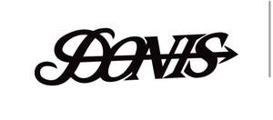

Trade Mark Journal No.2026/007 13 February 2026
UK00004333294 31 January 2026 (41)

- Class 41
- Organising of sports and sports events; Organising of sports competitions and sports events; Organising of sports events and of sports competitions; Organising of sports events; Organisation of sporting competitions and sports events; Timing of sports events; Sports events (Timing of -); Organising of sports competitions and events; Conducting of sports events; Handicapping for sporting events; Sports activities; Management of events for sporting clubs; Services for the organisation of sports events; Organization of sporting events and competitions; Providing facilities for sporting events, sports and athletic competitions and awards programmes; Organisation of sports events in the field of football; Organising of sporting events, competitions and sporting tournaments; Organization of sporting events; Providing facilities for sports events; Handicapping services for sporting events; Conducting of live sports events; Organisation of sporting events and competitions; Booking of sports personalities for events (services of a promoter); Organising of sporting events; Organising sporting events; Entertainment services in the nature of sporting events; Organisation of sporting events; Production of sporting events; Organization of sporting events and competitions, involving animals; Provision of sporting events; Entertainment services relating to sporting events; Organising community sporting events; Arranging of sporting events; Competitions (Organization of sports -); Organization of sports competitions; Booking of seats for shows and sports events; Organising of football events; Production of sporting events for television; Organisation of sports tournaments; Production of sporting events for radio; Tournaments (Staging of sports -); Organising of sports competitions; Competitions (Organising of sports -); Sports competitions (Organising of -); Organising of sporting activities and of sporting competitions; Organization of entertainment events; Organisation of sports competitions; Organizing community sporting and cultural events; Sporting activities; Organisation of entertainment events; Organisation of events for cultural, entertainment and sporting purposes; Organising of recreational events; Entertainment services in the nature of skating events; Arranging of sports competitions; Arranging and conducting of sports events; Provision and management of sporting events; Services for the organisation of football events; Organising of sporting activities and competitions; Organising of sporting activities or competitions; Hosting of entertainment events; Gymnastics events (Organising of -); Organising gymnastics events; Entertainment, sporting and cultural activities; Ticket information services for sporting events; Organisation of sporting activities and competitions; Organisation of automobile rallies, tours and racing events; Organisation of entertainment and cultural events; Production of sporting events for film; Sports entertainment services; Dance events; Sports club services; Organization of cosplay entertainment events; Organization of electronic sports competitions; Entertainment services provided during intervals at sports events; Organisation of sports activities for summer camps; Ice-skating events (Organising of -); Arrangement of sports competitions; Entertainment provided during intervals of sporting events; Rental of equipment for use at sporting events; Ticket reservation and booking services for education, entertainment and sports activities and events; Providing facilities for sports tournaments; Time recording services for sporting events; Sporting and cultural activities; Cultural and sporting activities; Ticket procurement services for sporting events; Organisation of automobile racing events; Organization of animal racing events; Sporting and recreational activities; Conducting of sports competitions; Production of esports events; Sports training; Training in sports; Sports and fitness; Conducting of entertainment events; Organisation of cycling events; Organisation of esports events; Organization of dancing events; Sports commentary services; Production of esports events for television; Organising events for entertainment purposes; Sporting event organization; Entertainment services in the nature of organizing social entertainment events; Sports betting services; Organising of motor racing events; Coaching services for sporting activities; Education, entertainment and sports; Provision of recreational events; Providing sports news; Arranging and conducting of sports events for charitable purposes; Organizing cultural and arts events; Providing will-call ticket services for entertainment, sporting and cultural events; Sports and fitness services; Sports officiating; Operation of sports camps; Hosting of fantasy sports leagues; Sports coaching; Sporting competitions (Organising of -); Advisory services relating to the organisation of sporting events.
Ben Smith